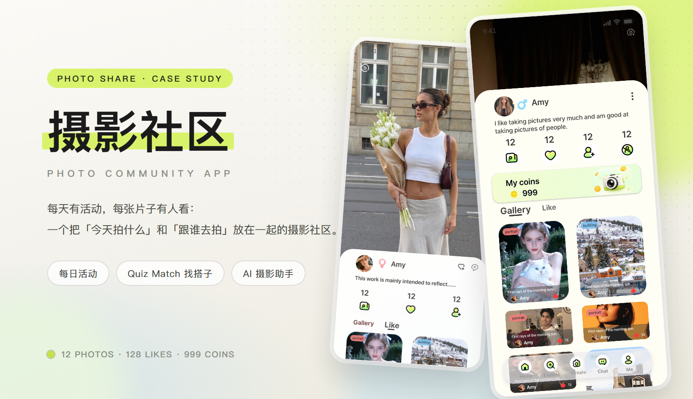
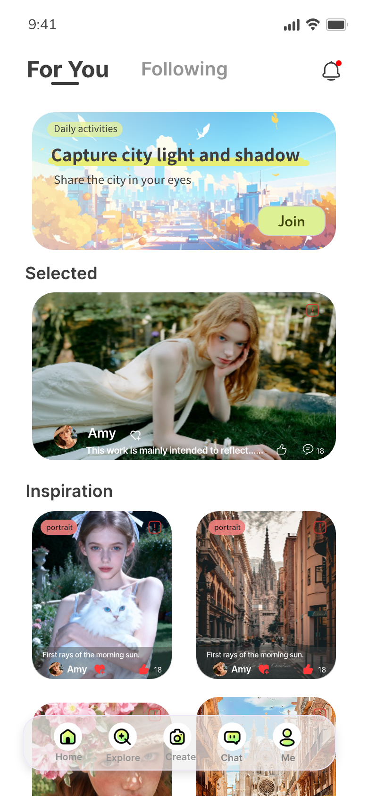
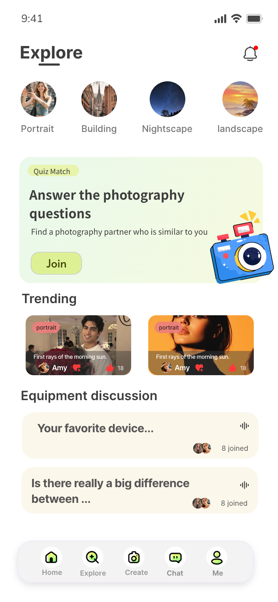
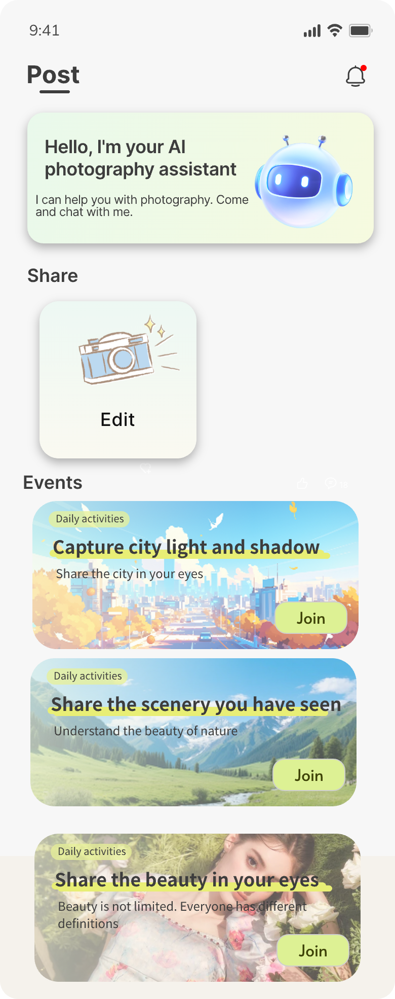
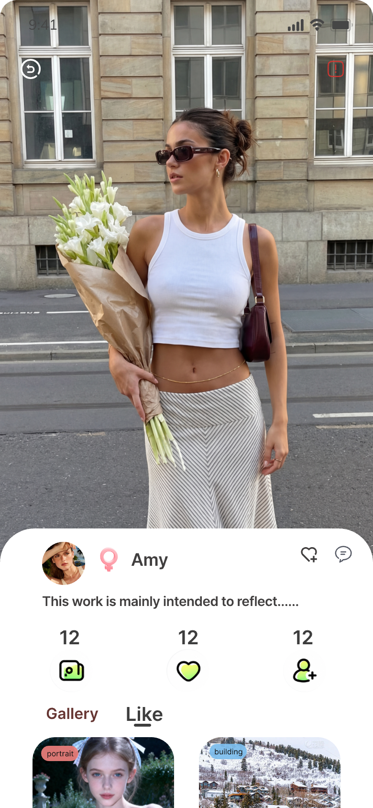
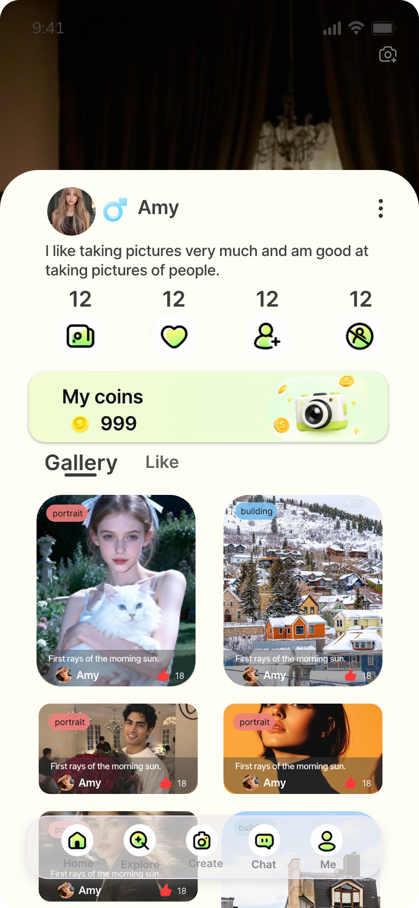

摄影社区 · 摄影作品分享与找搭子 App
拍照的人缺的不是相机，是「今天拍什么」和「跟谁去拍」：题材一年换三回，一个人扫街拍到第三个月就没劲了。这个 App 把两件事放进同一条动线——先在每日活动里接一个题目，再看别人怎么解，最后用四个小问题找到风格相近的搭子。整套界面按一屏一屏铺完，不是几张效果图。
主视觉

项目背景
影像社区 · 题目与搭子两条线
这款 App 面向国内一二线的业余摄影爱好者：手机 + 一台微单的人很多，职业摄影师很少。旧版是一个纯粹按时间排的图片墙——一天能刷到几百张片子，但没有一个地方告诉新手「这个周末该拍什么」，也没有一个地方让两个人约着出门；器材讨论沉在列表最底部，谁想问一句「这支镜头值不值」，只能自己开帖。
重做没有加新功能，而是把「题目」和「人」提到最前面：首页 For You 用一条 Daily activities 挂住当天的活动，Selected 放一张编辑挑过的作品，Inspiration 双列承接浏览；探索页把题材做成四个圆形入口，Quiz Match 用四道题找风格相近的搭子，器材讨论改成语音问答；发布页给 AI 摄影助手一块固定的位置；作品详情与个人主页负责回答「这张片子是谁拍的」。
设计策略
一条活动开场，照片永远比按钮大
- 首页固定三段：Daily activities 一张活动卡（城市插画底 + 荧光笔标题 Capture city light and shadow + 右下角青柠 Join），Selected 一张横图作品卡（底部压作者行：头像 / 名字 / 点赞 / 评论），Inspiration 双列 4:5 竖图。第一屏永远只放「一条活动 + 一张大图 + 两个小图」，不堆信息。
- 活动卡是复用组件：浅蓝到浅橙的插画底、白色小胶囊标签、青柠 Join 按钮，标题用一支荧光笔压在半高位置。换活动只换图与文案，布局不动——所以发布页的 Events 能连排三条而不显得吵。
- 探索页只做「按题材找」和「按人找」两件事：Portrait / Building / Nightscape / landscape 四个圆形入口横排一行，下面 Quiz Match 用一张薄荷卡说清玩法（Answer the photography questions → Find a photograph partner who is similar to you）；Trending 沿用双列作品卡，器材讨论则是两条语音问答行，右侧一颗波形图标 + 一串头像 + 8 joined。
- 发布页把 AI 助手放在最上面，而不是藏在入口里：Hello, I'm your AI photography assistant 一张薄荷卡，配一只戴耳机的机器人；下面是 Share 的一颗大方卡（相机图标 + Edit），再往下才是 Events。发布不是终点，是「接着参加下一场」。
- 作品详情与个人主页是同一套骨架的两种排法：详情用整屏照片开场，sheet 从下沿以 32px 圆角升起，作者行、一句正文、三项数据、Gallery / Like 两颗 tab 依次往下；个人主页换成暗色大图 + 白色 sheet，多一条 My coins（999 + 相机金币图标）与四项数据，作品区双列。
部分界面截图
这个 App 是按整站交付的 · 这里挑 5 屏
这次交付的是整个 App 的主界面，不是几张效果图：For You 首页、探索、发布、作品详情、个人主页，连同活动卡、Quiz Match、语音问答行、金币条与底部五格 tab 一起出稿。下面 5 屏全部来自设计稿原图。
挑这 5 屏，是因为它们各自回答一个不同的问题——今天拍什么（首页）、按什么题材找（探索）、怎么把片子发出去（发布）、这张片子是谁拍的（作品详情）、这个人拍过什么（个人主页）。





视觉语言
暖纸白底 · 荧光青柠 · 薄薄荷 · 珊瑚粉 · 近黑
整站底色是一张暖纸白 #f4f2ec，不是纯白：照片压在纸上，边缘不发青，看久了也不刺。荧光青柠 #d8f36b 是全站唯一的高饱和色，只做两件事——把标题的最后一行「划」出来（一支荧光笔压在半高位置），以及 Join 这类「点了一定会参加」的按钮；薄荷 #eaf6dd 只给需要说明的卡（AI 助手、Quiz Match、My coins），因为它比青柠安静，能装长句子；珊瑚粉 #ff8f8f 是题材标签（portrait / building），小面积、只出现在缩略图左上角；正文回到近黑 #1b1b1b，副文 #5b5f58、辅助 #8d9187 各降一档。形状全部走大圆角：卡片 20–24px，活动卡与作品图 24px，sheet 32px，按钮与标签一律胶囊。层级只靠两件事拉开——图片面积和字重；除了那支荧光笔，全站不做其它装饰。
遇到的问题与解决
3 个「社区 + 内容」带来的取舍
问题首页既要挂住今日活动，又要给作品流位置：活动卡一放大，第一张作品就整张看不见了。
解决把第一屏拆成固定的三段配额：活动卡固定 1 张（约 190px 高），Selected 固定 1 张横图，Inspiration 固定露出 2 张竖图的上半截。活动再怎么换图换文案，这个配额不动，滚动距离也就不会因为活动数量变化而跳动。
问题荧光笔标题在浅色底上很容易变成一块脏黄，尤其换了几种绿以后。
解决定死一条规则：荧光笔只压标题的最后一小段，颜色固定 #d8f36b，高度压到字高的 40%，永远不进正文；正文与副文一律走近黑与灰，不做任何底色。这样一支笔在整站只出现三五次，反而成了这套稿子的记忆点。
问题作品详情要同时讲「这张照片」和「这个人」，全屏大图与作者信息抢同一块地方。
解决上半屏让给照片，一像素都不压字；sheet 从图片下沿以 32px 圆角升起，按「作者行 → 一句正文 → 三项数据 → Gallery / Like」分四段，每段之间只用 16px 空隙，不加分割线。想看更多作品就往下滚 Gallery，不用跳页。
从设计到交付
3 步 · 从两屏打样铺到整个 App
-
1 · 概念 · 把「一条活动」做成封面
先定气质：暖纸白 + 荧光笔 + 满屏照片，读起来像一本摄影杂志的目录页，而不是一个社区工具。用首页与探索两屏打样，确认「照片永远比按钮大、青柠只给一次点击」这条底线，再动其他页面。
-
2 · 制作 · 先拆两条路，再铺全站
把「拍什么」与「跟谁拍」拆成两条独立的线：内容线是 Daily activities → Selected → 作品详情 → 个人主页，人的线是探索 → Quiz Match → 器材讨论 → 消息；两条各自铺完之后，再补发布、金币与设置。活动卡、题材标签、语音问答行、金币条、底部五格 tab 收成一套组件规范。
-
3 · 交付 · 组件、标注与走查
交付组件 Variant 与页面清单，和开发一起走查 iOS / Android：暖白在 OLED 与低亮度下的偏色、4:5 竖图与 3:2 横图混排时作者行的对齐、长活动标题与长简介是否顶破卡片、底部 tab 与 sheet 的安全区，逐项确认。
交付内容
这次做了什么